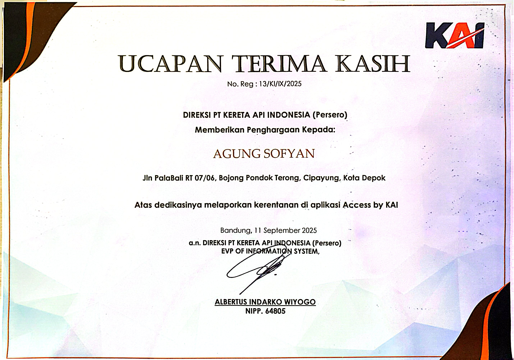
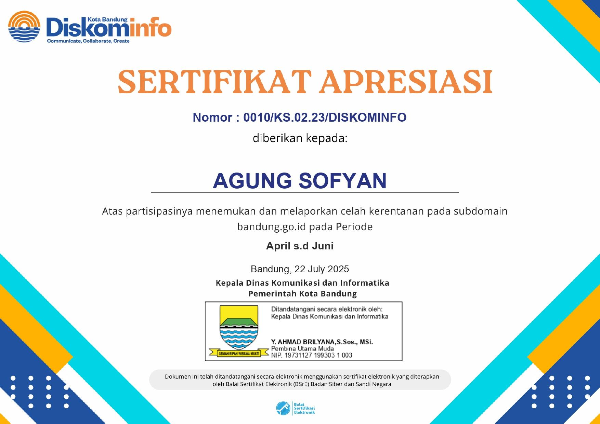
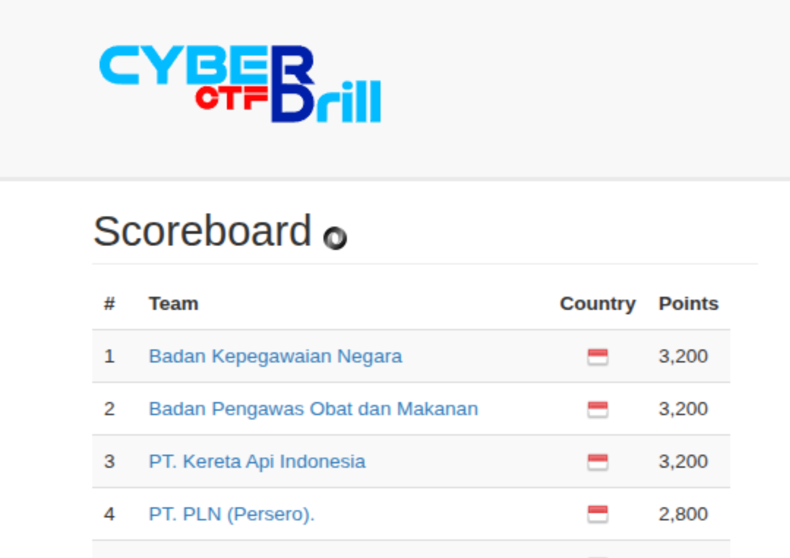
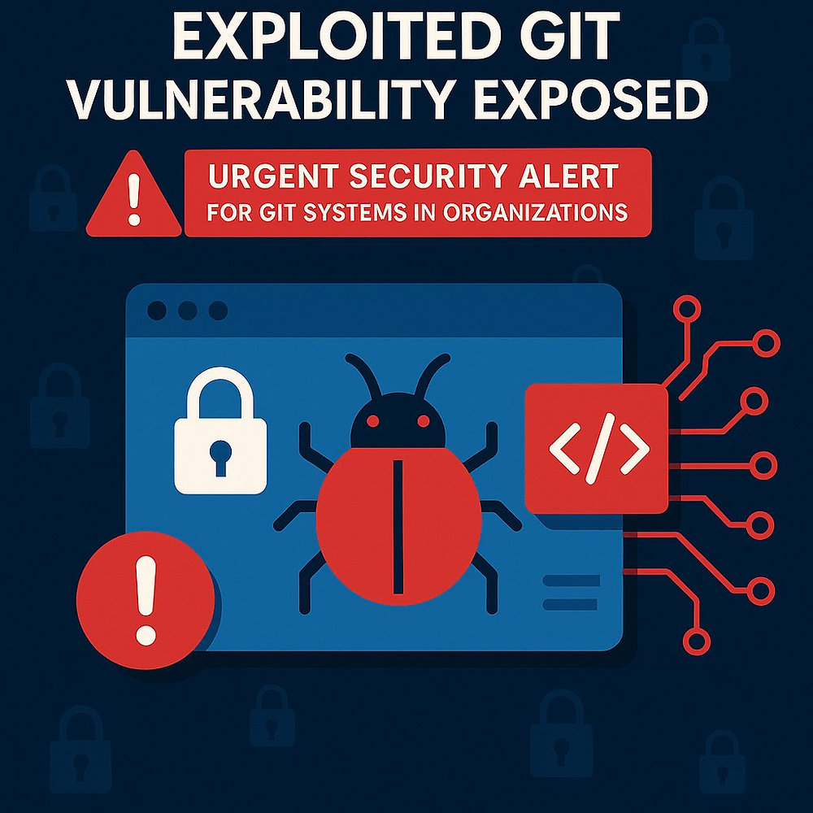

Iseng-iseng Berhadiah: Folder .git Bocor, Database Perusahaan Ikut Melayang!
Keamanan Informasi — Folder .git terbuka ke publik, Ambil alih database.
Read on MediumMahasiswa Akhir S1 Teknologi Informasi tahun ketiga yang berdedikasi dengan keahlian di bidang Keamanan Siber, Intelijen Ancaman Siber, dan SOC, didukung oleh sertifikasi global. Kemauan belajar dan Terampil dalam pemecahan masalah dan inovasi, mencari peran untuk meningkatkan keamanan organisasi melalui penilaian dan strategi pertahanan tingkat lanjut.
Saya merupakan praktisi keamanan siber dengan fokus pada Vulnerability Assessment dan Penetration Testing.
Memiliki pengalaman dalam mengidentifikasi celah keamanan seperti Broken Access Control, IDOR, dan misconfiguration pada sistem berbasis web, termasuk pada lingkungan BUMN dan pemerintahan.
Terbiasa melakukan pengujian end-to-end mulai dari reconnaissance, eksploitasi, hingga responsible disclosure untuk memastikan perbaikan berjalan efektif.
Mengidentifikasi kerentanan otorisasi pada endpoint log notifikasi email milik salah satu perusahaan BUMN. Celah ini memungkinkan akses tidak sah terhadap data internal dan informasi pengguna lain. Telah dilakukan pelaporan resmi (Responsible Disclosure) kepada tim CSIRT terkait.
Menemukan direktori .git yang terekspos publik pada platform media nasional terbesar di Indonesia. Celah ini mengungkap AWS Access Keys yang berisiko memberikan akses penuh ke basis data perusahaan. Temuan telah dilaporkan dan ditindaklanjuti oleh tim terkait.
Menemukan API endpoint tanpa mekanisme otorisasi yang memadai. Kerentanan ini memungkinkan pihak ketiga untuk mengakses informasi identitas pribadi (PII) pengguna hanya dengan memanipulasi parameter ID.
Menemukan kredensial yang tertanam langsung (hardcoded) pada source code situs staging. Kebocoran ini mencakup akun login default yang dapat digunakan penyerang untuk melakukan pemetaan sistem dan eskalasi hak akses.
Mengidentifikasi file phpInfo() yang terekspos pada sistem instansi BUMN. File tersebut mengungkap konfigurasi server, variabel lingkungan, hingga kredensial basis data yang sangat sensitif dan berisiko tinggi terhadap keamanan sistem.
Menemukan fitur debugger (phpDebugBar) yang aktif secara publik. Celah ini memungkinkan pemantauan konfigurasi sistem, kueri basis data, dan aktivitas internal secara real-time oleh pihak yang tidak berwenang.
Menemukan kesalahan konfigurasi yang menampilkan stack trace lengkap pada sistem internal. Informasi teknis yang bocor mencakup struktur basis data dan alur logika aplikasi yang dapat dimanfaatkan untuk memetakan serangan lebih lanjut.
Menemukan dokumen rekrutmen pada sistem milik BUMN yang terekspos ke publik. Kebocoran ini mengakibatkan data pribadi peserta dapat diakses secara bebas, yang berisiko pada penyalahgunaan identitas dan pelanggaran privasi.
IPK - 3.83
Rata-rata: 83.73
Cisco NetAcad
IBM
BNSP
Fortinet Training Institute
Fortinet Training Institute
Cisco NetAcad
Cisco NetAcad
Cisco NetAcad
Skill Front
Menerima penghargaan resmi dari EVP of Information System (Direksi KAI) atas kontribusi aktif dalam pelaporan kerentanan keamanan (Responsible Disclosure) pada aplikasi Access by KAI.

Mendapatkan apresiasi resmi dari Kepala Dinas Komunikasi dan Informatika atas keberhasilan mengidentifikasi dan melaporkan celah keamanan pada infrastruktur web Pemerintah Kota Bandung.

Berhasil meraih peringkat ke-3 dalam kompetisi Cyber Drill Capture The Flag (CTF) antar BUMN, berkontribusi dengan Tim Security PT Kereta Api Indonesia (Persero).


Keamanan Informasi — Folder .git terbuka ke publik, Ambil alih database.
Read on MediumDatabase Terbuka - Keamanan Informasi - Misconfiguration.
Read on MediumKeamanan Siber - Penjamin Informasi - Edukasi keamanan siber untuk menjadi tahu sisi hacking.
Read on Medium